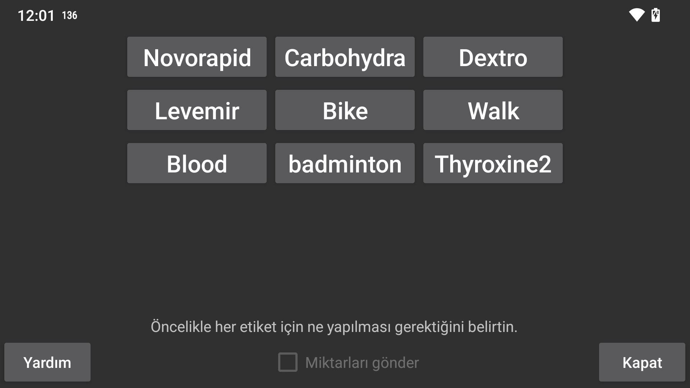

ar be de es fr hi it ja ko nl pl pt ru tr uk uz zh en
Miktarları Libreview'e göndermek için "Miktarları Gönder"i seçin. "Miktarları Gönder"i açmadan önce, her etiket için o etiket altında girilen miktarların Libreview'e nasıl gönderileceğini belirtmeniz gerekir. Etiketler, Sol menü > Ayarlar > Sayı Etiketleri sekmesinden oluşturulabilir, değiştirilebilir ve silinebilir.
Etiketler Libreview'e yorum olarak gönderildiğinde şu kısıtlama geçerlidir. Bir etiketi değiştirdikten sonra, önceki etiket altında girilen miktarların silinmesi ve değiştirilmesi Libreview'de değişikliklere yol açmayacaktır. Örneğin, daha önce Bisiklet etiketiniz varsa ve 20 girdiyseniz, ardından Bisikleti Cycling olarak değiştirdiyseniz ve 25'ten 20'ye değiştirdiyseniz, bu değişiklik Libreview'de bir değişikliğe yol açmayacak, ancak hem Bisiklet 20 hem de Cycling 25 Libreview'de mevcut olacaktır. Yapabileceğiniz tek şey, Libreview'deki mevcut cihazları silmek ve Juggluco'da Verileri Yeniden Gönder'e basmaktır.